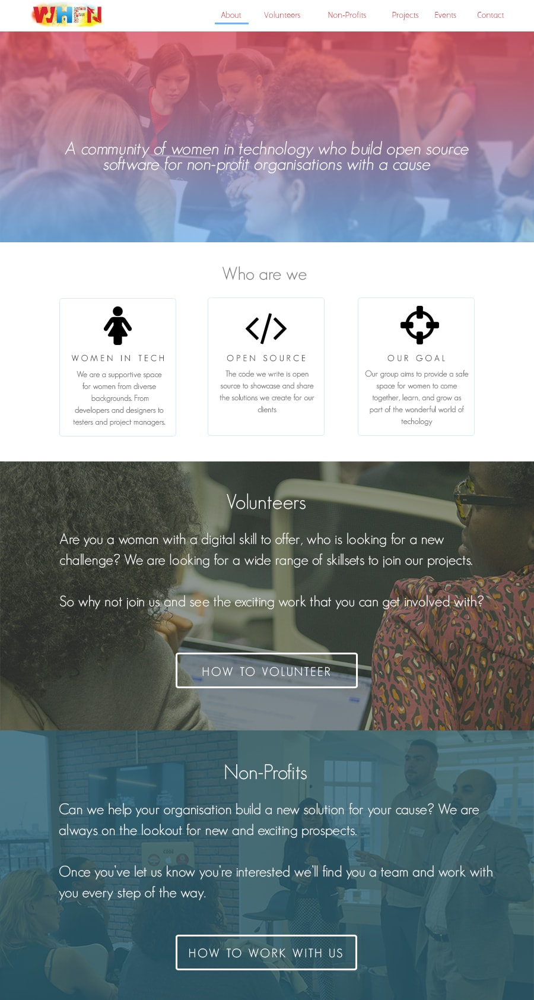
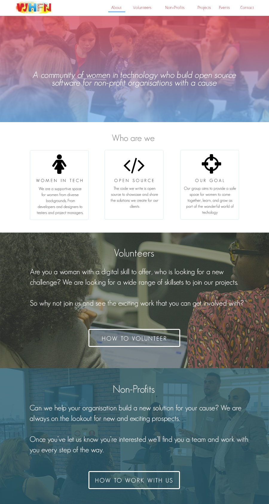
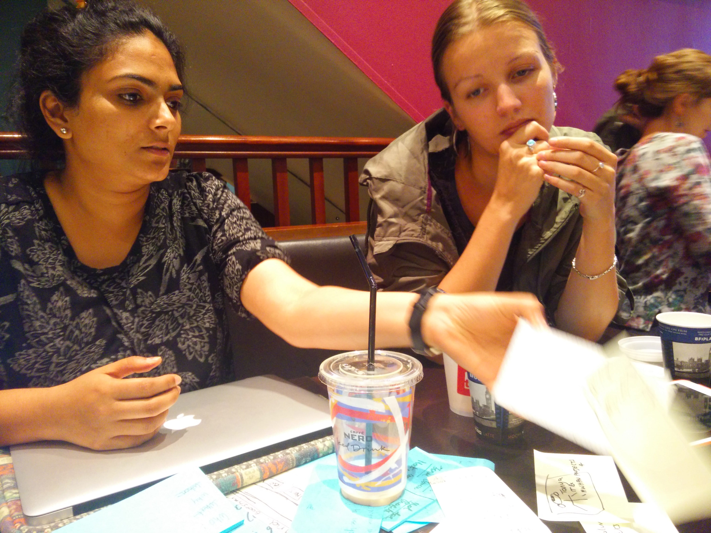
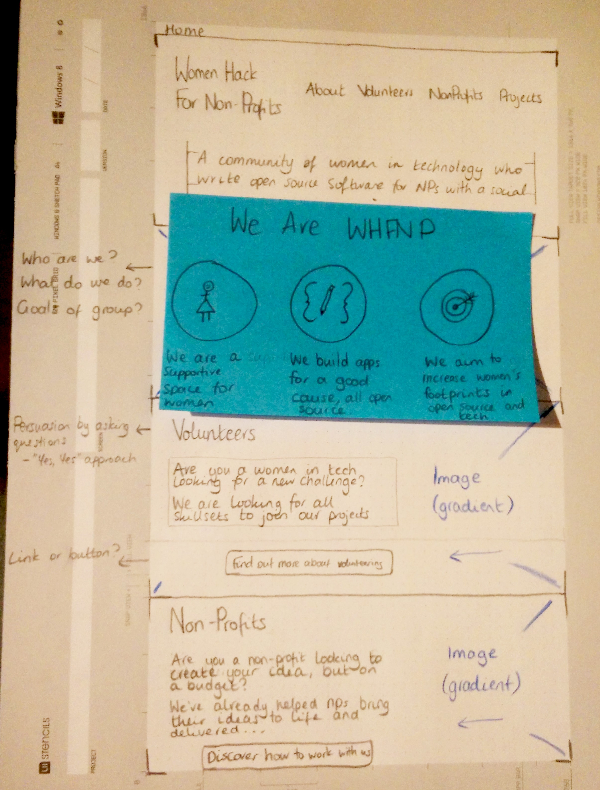
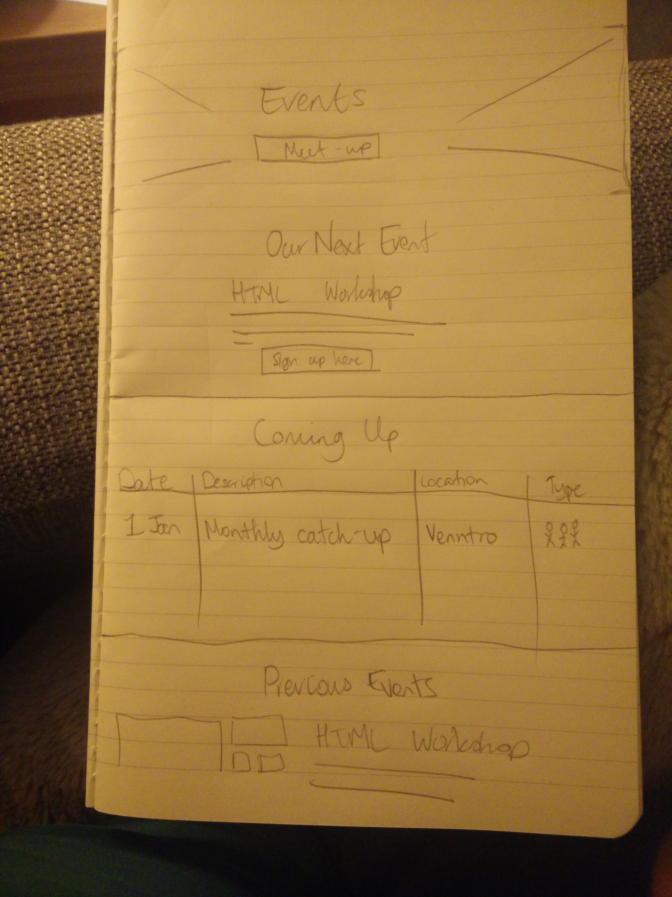
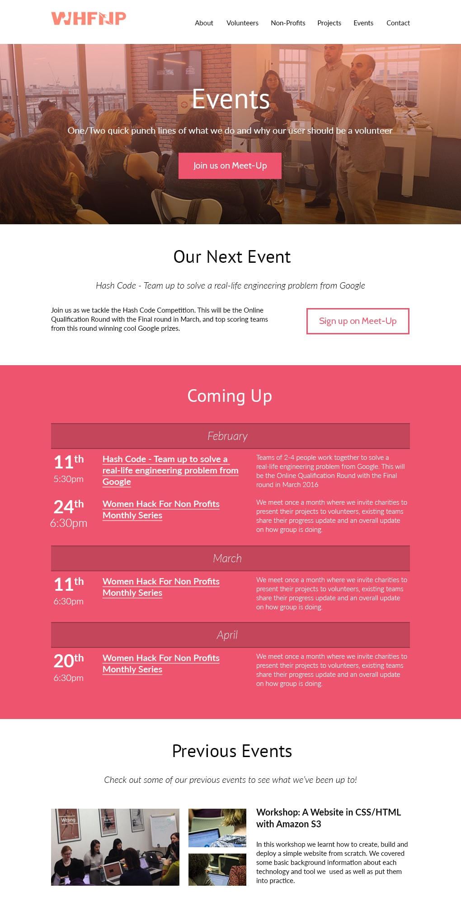
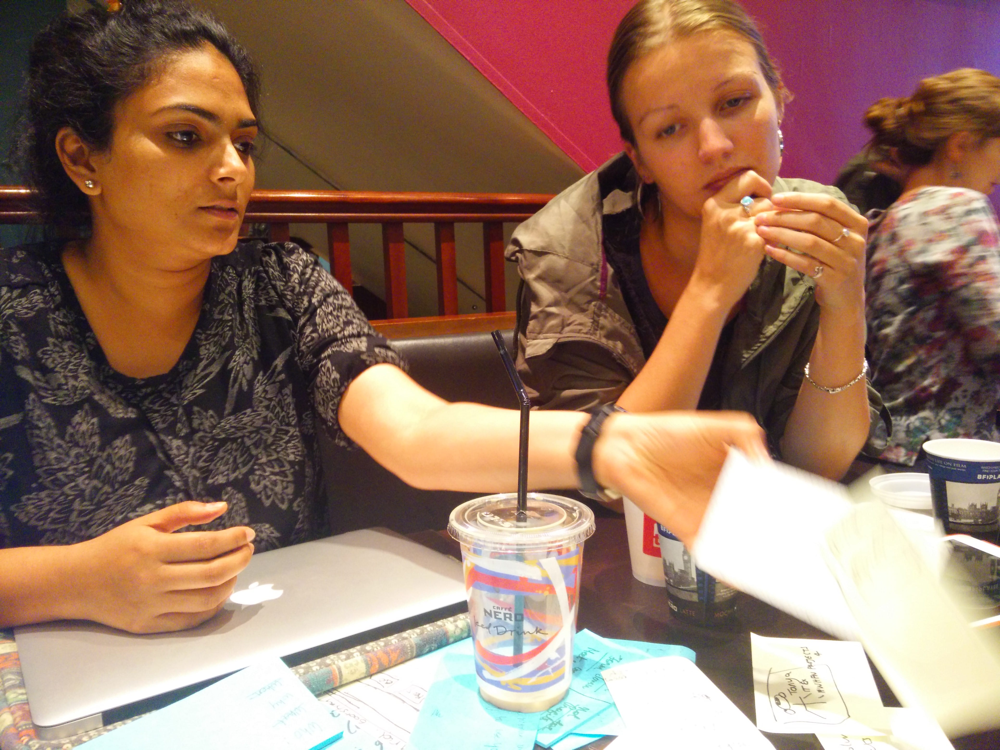
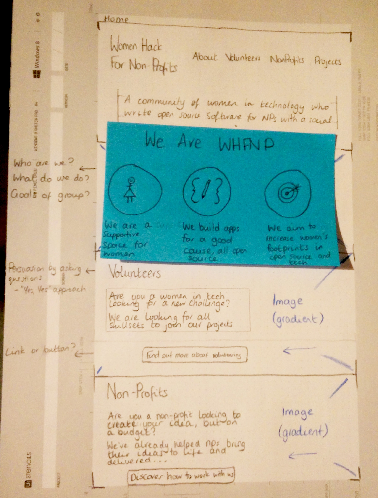
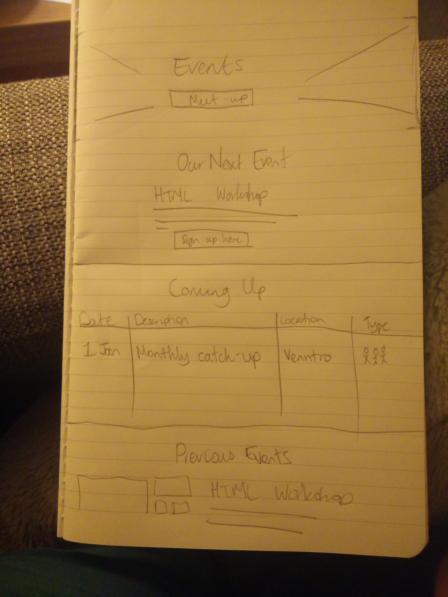
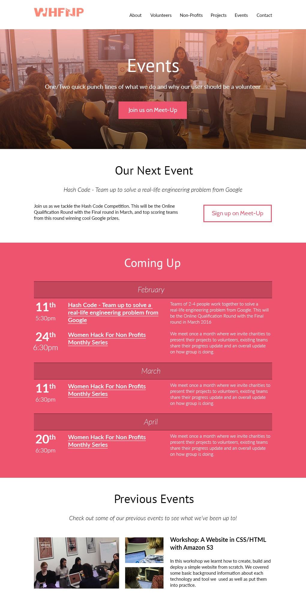

Recreating the online experience for Women Hack For Non-Profits, a community supporting women and open-source, doing projects with a good cause.
Project Objectives
Redesign the current website for the WHFNP community and offer a responsive experience
Increase number of volunteers joining the group
Gain work from non-profits
Create a portfolio of the group's hard work
Process
Requirement Gathering
I joined the project at the early stages and went through my process of requirement gathering. After many interviews with the co-founders and users it was clear the issues we had with the current website and how the founders wanted the group to be portrayed. It took a lot of phone calls, meetings and user interviews for the requirements.
Prototypes
I learnt the most from this project in terms of prototypes. I wanted to improve my front-end coding and decided to do all of my prototypes in HTML and CSS. Creating prototypes using Github meant that even as a user experience designer I could also be an advocate for open-source projects, which is a core value of the community. Using Git also gave me reassurance to really take big leaps in my designs, because with versioning control it's easy to switch between different looks and showcase the evolution of my designs.
 

I quickly learnt that my stakeholders were quick to change their mind and the project manager on the team didn't understand why a finished-looking product wasn't the final product. For example, I was quickly asked why the first version wasn't responsive, why was it not interactive. Using a HTML prototype was great for user interviews, I could publish the website for free and have it to hand. However when making big changes, coding even the front-end of the website took a lot longer, which made me really appreciate tailored prototyping software.
The interactive prototype can still be found here on my github.
Sketching
As the project went on, my appreciation for an earlier process started to unfold. I now sketch every page before investing in a higher fidelity mockup. I also started to make the sketching more collaborative with the stakeholders and members of the team. This helped the team make the decisions faster and made people feel like a part of the process in our website.
 







Feedback
I gathered feedback in numerous ways, from Twitter, the WHFNP community and a UX Slack community. I also did user testing with people in the work spaces the team made use of. I set people tasks giving them different characters. For example I would tell a user they're now a non-profit, and set them the task of finding how to contact us about a project.
Results
Great feedback in user interviews, positive attitude and tasks were completed. Users could find the call to actions.
Really learnt to appreciate cheaper and quicker prototypes.
Future Plans
User testing with the latest designs once the new website goes live.
Adding analytics will show us the user journeys people are actually taking and will show us how we need to drive users to where we want them to go.